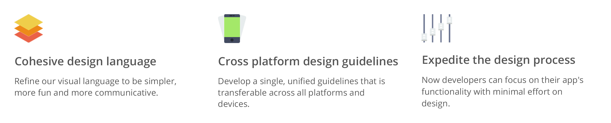

Introduction
With the developer base of SAFE Network is growing with time, it becomes important that the design pattern and visual styles are upheld to deliver a defined and cohesive experience. The purpose of this design guidelines is to serve as a quick start guideline for the developers. The design guidelines comes with standard colour schemes, typography, iconography, brand assets, code snippets and more.
Goals

Download
Developers can use the SCSS library or include the CSS file as a base style and can expand it.